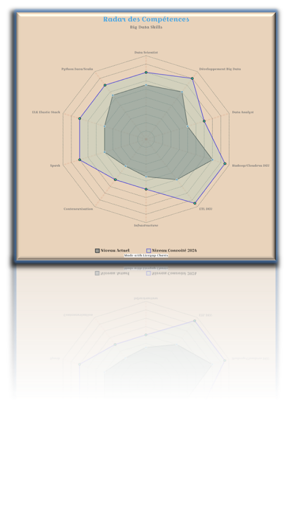

Data Science
- Hadoop / Spark (Scala -PySpark)
- xDI-Semarchy
- ODI( Oracle data Integrateur)
- Talend
- BO (Business OBJECT)
- Informatica
- Elastic-Stack (ELK: ElasticSearch Kibana Logstash)
- Data Science
- Deep Learning
Methodologies et pratiques
- Méthodes Agiles: Agile Data Development (SCRUM, SAFE, XP)
- CI / CD
- DataOpss
- Lean Data
- Scrum pour Data
- Waterfall (Approche en Cascade)
- Modélisation des Données
- Test-Driven Development (TDD) pour les Données
- Version Control pour les Données
- Documenter et Standardiser
Programmation
- Connaissances théoriques
- Python
- SQL
- R
- Jinja
- Java
- Scala
- C / C++
- Bash
- Git / SVN / SVC
FrameWork
- Connaissances théoriques
- Hadoop (Cloudera, Hortonworks)
- Apache Spark
- Arcan / Magic Load (ETL maison de Boygues telecom)
- AOG (FW maison de BPCE-IT )
- JSF
- TRUST
- SPRING
- EJB
- Hibernate
Web
- Connaissances théoriques
- PHP
- MySQL
- JavaScript
- HTML5
- CSS3
- BOOTSTRAP
- Jango
- NodeJS
Logiciels
Systèmes
- Windows / OS X / Linux
- Réseau
- Administration système
Bureautique
- Microsoft Office
- LaTeX
- OpenOffice
- Suite Macromedia Adobe
Communication
Langues
- Français (Bilingue)
- Anglais (Bon niveau usuel)
- Arabe (Bilingue)
Management
- Travail en équipe & Gestion
- Gestion de projet informatique
- Management de la Qualité
Hobbies
- La pêche
- La photographie
- La natation
- La rendonée
- Bricolage, Electronique,
- Vulgarisation scientifique
Matrice des compétences

Matrice des compétences